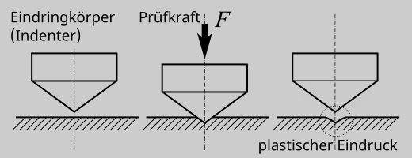

1. Grundlagen#
Härte ist der Widerstand eines Stoffes gegen das Eindringen eines anderen (härteren) Körpers (Definition von Martens, 1912). Härte ist ein relatives Maß. Sie ist nur feststellbar im Vergleich zur Härte eines anderen, härteren Stoffes. Deutlich wird dies z.B. in der Härteskala nach Mohs für Mineralien.
Zu jeder Härteangabe gehört die Angaben zum benutzten Prüfverfahren sowie zu den Prüfbedingungen. Ohne diese Angaben ist der Zahlenwert nutzlos!
Für die technische Anwendungen bei metallischen Werkstoffen sind die folgenden Härteprüffverfahren relevant:
statische Krafteinwirkung
dynamische Krafteinwirkung
Der Ablauf bei den Standardhärteprüfverfahren (Brinell, Vickers, Rockwell; entw. von 1900-1930) ist im Grunde immer gleich:
Ein Eindruckkörper (Indenter) wird langsam bis zur max. Prüfkraft in das Werkstück eingedrückt
Die Prüfkraft wird gehalten
Die Probe wird entlastet (Brinell, Vickers komplett; Rockwell teilweise)
Der plastische Eindruck wird vermessen (Eindringtiefe, Eindruckfläche) und als Maß für die Härte genutzt

Bei den Standardhärteprüfverfahren wird der plastische Eindruck (plastischen Verformungseigenschaften, plastische Eindringwiderstand) bewertet. Werkstoffe die sich nicht plastisch Verformen (z.B. gummielastische Werkstoffe) können mit den Verfahren nicht bewertet werden.
H_AblAllg.png